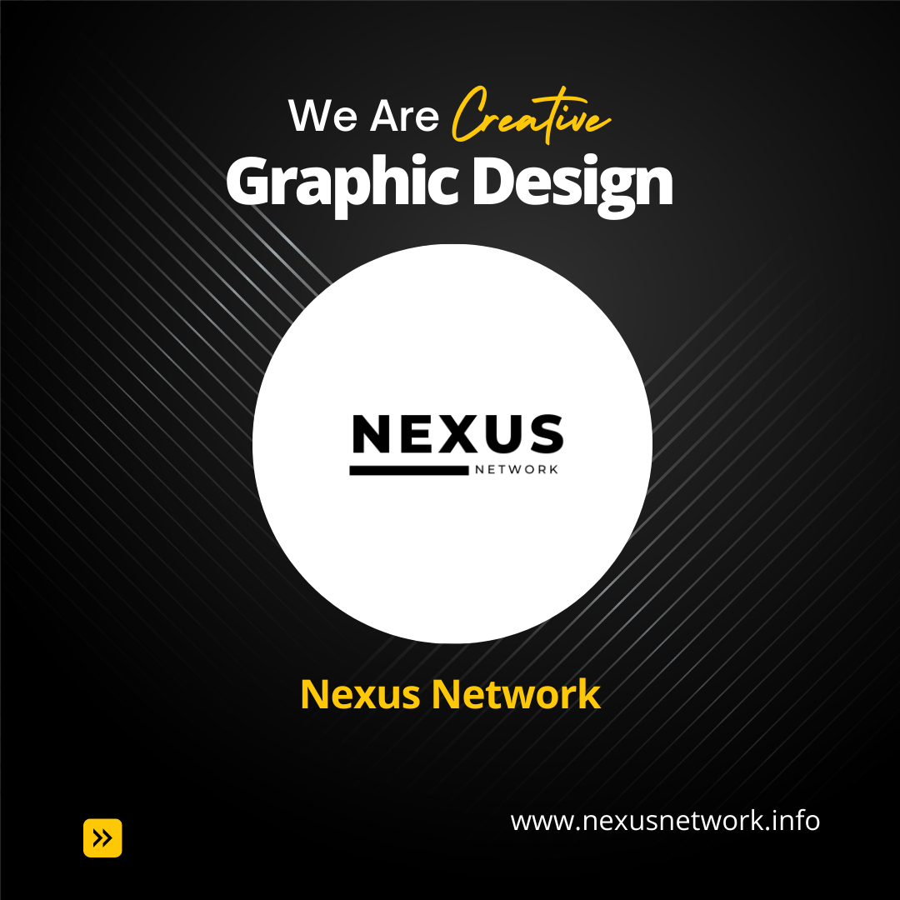

Graphic design is the art and practice of planning and projecting ideas and information through the use of visual communication and typography. The field encompasses a wide range of design disciplines, including typography, visual identity, user experience design, web design, product design, and advertising. Graphic designers use a variety of tools and techniques to create their work, including pencils, pens, brushes, scanners, computers, and software. They must have a strong understanding of typography, color theory, and visual composition. They must also be able to think creatively and solve problems visually. Graphic design is used in a wide variety of industries, including advertising, publishing, marketing, and product design. It is a growing field, and there is a high demand for skilled graphic designers. Here are some of the different types of graphic design: Brand identity and logo design: This type of graphic design is focused on creating a visual identity for a company or organization. This includes designing logos, branding guidelines, and other visual elements that will help to create a cohesive and recognizable brand. Packaging design: This type of graphic design is focused on creating the packaging for products. This includes designing the packaging itself, as well as the graphics and typography that will be used on the packaging. Web and mobile design: This type of graphic design is focused on creating websites and mobile apps. This includes designing the user interface (UI) and user experience (UX) of the website or app. Layout and print design: This type of graphic design is focused on creating layouts for print materials, such as brochures, magazines, and newspapers. This includes designing the layout of the pages, as well as the graphics and typography that will be used. Motion graphic design: This type of graphic design is focused on creating animated graphics. This includes creating animations for websites, videos, and other digital media. Environmental graphic design: This type of graphic design is focused on creating graphics for the built environment. This includes designing wayfinding systems, signage, and other graphics that will be used in public spaces. Graphic design is a creative and challenging field that offers a variety of career opportunities. If you are interested in a career in graphic design, there are a number of things you can do to prepare, such as taking graphic design classes, developing your portfolio, and networking with other graphic designers.
Graphic design is the art and practice of planning and projecting ideas and information through the use of visual communication and typography. It is a versatile field that can be used to achieve a variety of goals. Here are some of the benefits of graphic design: Increased brand awareness: Graphic design can help to increase brand awareness by creating a visually appealing and memorable brand identity. This can be done through the use of logos, branding guidelines, website design, and other visual elements. Improved communication: Graphic design can help to improve communication by using visual elements to convey information in a clear and concise way. This can be done through the use of infographics, charts, and other visual representations of data. Increased sales: Graphic design can help to increase sales by creating eye-catching marketing materials that persuade people to buy a product or service. This can be done through the use of posters, flyers, and other print materials, as well as digital marketing materials such as website banners and social media ads. Improved user experience: Graphic design can help to improve user experience by creating websites and apps that are easy to use and navigate. This can be done through the use of clear and concise typography, simple layouts, and intuitive navigation. Increased creativity: Graphic design can help to increase creativity by giving people the tools and techniques to express themselves visually. This can be done through the use of different design software, as well as the exploration of different visual elements such as color, typography, and imagery. Graphic design is a powerful tool that can be used to achieve a variety of goals. If you are looking for a way to communicate your ideas effectively, graphic design is a great option. Here are some additional benefits of graphic design: It can help to create a more visually appealing and engaging experience for users. This can lead to increased website traffic, sales, and brand awareness. It can help to communicate complex information in a clear and concise way. This can be helpful for businesses, organizations, and individuals who need to communicate information to a large audience. It can help to create a more memorable and lasting impression. This can be beneficial for businesses and organizations that want to create a strong brand identity. It can help to set your business or organization apart from the competition. In today's crowded marketplace, it is more important than ever to stand out from the crowd. Graphic design can help you do just that. If you are looking for a way to improve your communication, increase your brand awareness, or simply create something visually appealing, graphic design is a great option.
There are many reasons why your company might be the best for graphic design. Here are a few of them: Your company has a strong brand identity. A strong brand identity is essential for any company that wants to stand out from the competition. Your company's graphic designers should be able to create designs that reflect your brand identity and help to reinforce your company's message. Your company has a team of experienced graphic designers. Experienced graphic designers have the skills and knowledge to create high-quality designs that will meet your needs. They should also be able to work with you to understand your vision and create designs that meet your specific requirements. Your company is committed to innovation. The field of graphic design is constantly evolving, and your company should be committed to innovation. Your graphic designers should be up-to-date on the latest trends and technologies, and they should be able to use these trends and technologies to create designs that are both visually appealing and effective. Your company has a collaborative environment. Graphic design is a collaborative process, and your company should have a collaborative environment where graphic designers can work effectively with other departments, such as marketing and sales. This will ensure that your designs are aligned with your company's overall goals and objectives. If your company can offer these things, then you are well on your way to having a successful graphic design team. Here are some additional reasons why your company might be the best for graphic design: Your company has a clear understanding of your target audience. This will help your graphic designers create designs that will resonate with your target audience and achieve your marketing goals. Your company is willing to invest in quality graphic design. This means investing in the right tools and software, as well as the time and resources to create high-quality designs. Your company is open to feedback. Your graphic designers should be able to get feedback from you and other stakeholders throughout the design process. This will help them to create designs that are aligned with your company's goals and objectives. If your company can offer these things, then you are sure to have a successful graphic design team.